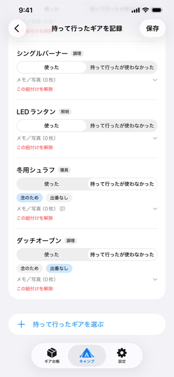
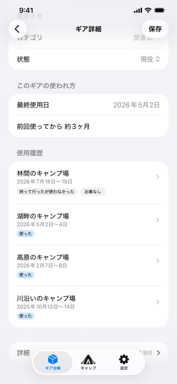
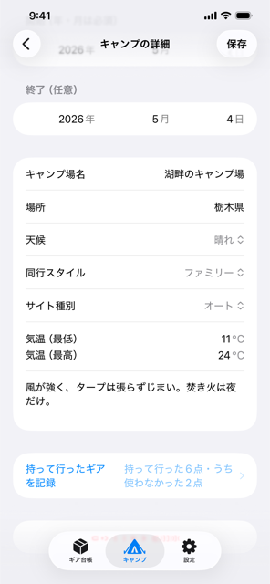
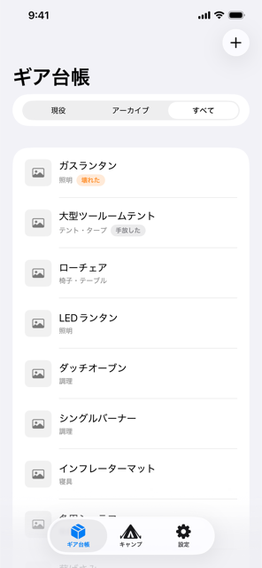

名前だけで、すぐ登録
ギアを追加するのに、必要なのは名前だけです。カテゴリ・メーカー・購入年月日・写真は、あとから「ギア詳細」の「詳細」で足せます。
最初から全部埋めなくていい、という設計です。

GearDeban（ギアデバン）は、その1回を記録するキャンプギア管理アプリです。
キャンプごとに使ったギアをチェックするだけで、ギアの側から「どう使われてきたか」が読めるようになります。
キャンプギアのアプリの多くは「持っている」を記録します。GearDeban が記録するのは、買ったギアが自分のキャンプで生き残ったかどうかです。
棚卸しはできても、そのギアが実際に役に立っているかは分かりません。
「持って行ったのに使わなかった」を残すことで、ギアが今どう使われているかが見えます。
ギアを追加するのに、必要なのは名前だけです。カテゴリ・メーカー・購入年月日・写真は、あとから「ギア詳細」の「詳細」で足せます。
最初から全部埋めなくていい、という設計です。

キャンプから帰ってきたら、持って行ったギアをチェックします。使わなかったものは、ワンタップで落とせます。
同じ「使わなかった」でも意味が違うので、分けて記録できます。
ギアの詳細を開くと、そのギアがどのキャンプで、どう使われたかが時系列で並びます。最後に使ったのはいつか、前回から何ヶ月経っているかも表示されます。
履歴の行をタップすると、そのキャンプの詳細に移動します。


キャンプ場・場所・天候・同行スタイル・サイト種別・気温・メモを残せます。日付は「思い出せるところまで」でよく、年と月だけの登録にも対応しています。
「2019年の秋、日付までは覚えていない」——そのまま登録できます。
ギアを手放したり壊れたりしたら、状態を変更します。削除ではなく状態の変更なので、それまでの使用履歴は残ります。一覧は「現役」「アーカイブ」「すべて」で絞り込めます。

ギアの登録・キャンプの記録・履歴・指標は、無料で無制限に使えます。登録できるギアの点数に上限もありません。
iCloud 同期買い切り ¥480だけが有料です。購入すると、貯めた記録を iCloud に保存し、機種変更や再インストールのあとでも記録を失いません。同期を使わなくても、記録は端末に保存されます。
記録はお使いの端末と、ご自身の iCloud にのみ保存されます。サーバーへ送信するデータはなく、 解析 SDK・広告 SDK も入れていません。
写真はアプリ内に複製せず、写真ライブラリの写真を参照します。アプリから写真を外しても、写真ライブラリの実体は残ります。